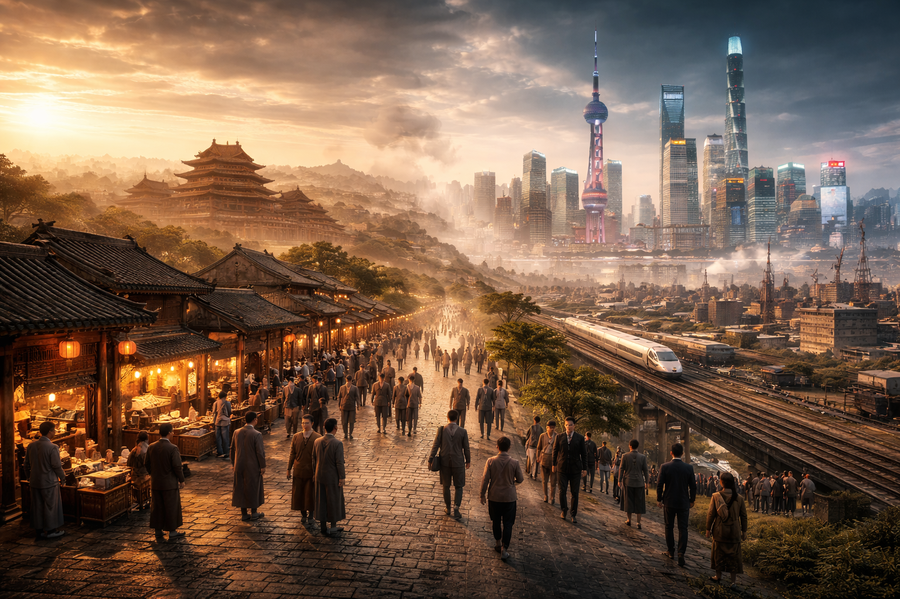

Um pouco sobre
A história da China é uma das mais antigas e contínuas do mundo, com registros que remontam a milhares de anos. Ao longo de sua formação, o país desenvolveu uma civilização complexa, marcada por avanços culturais, políticos e tecnológicos que influenciaram não apenas a Ásia, mas também outras regiões do planeta.
Governada por diversas dinastias ao longo dos séculos, a China construiu uma identidade sólida baseada em tradições, valores filosóficos e organização social. Invenções como o papel, a pólvora, a bússola e a impressão demonstram o papel fundamental do país no desenvolvimento da humanidade, consolidando sua relevância histórica em escala global.
Dinastias e impérios
Ao longo de sua história, a China foi governada por importantes dinastias que contribuíram para a consolidação de seu território e de sua cultura. A dinastia Qin, por exemplo, foi responsável pela unificação política do país e pelo início da construção da Grande Muralha, simbolizando o poder e a organização do Estado.
Já a dinastia Han desempenhou um papel essencial na consolidação cultural e administrativa, além de ampliar as relações comerciais por meio da Rota da Seda. Durante a dinastia Tang, houve um período de grande florescimento artístico e intelectual, enquanto a dinastia Ming destacou-se pelo fortalecimento das estruturas internas e pela expansão marítima. Esses períodos foram fundamentais para moldar a China como uma das civilizações mais influentes da história.
Transformações históricas
A transição da China imperial para a era moderna foi marcada por profundas transformações políticas e sociais. No início do século XX, o sistema imperial chegou ao fim, abrindo caminho para a formação de um novo modelo de governo. Esse período foi caracterizado por instabilidade, reformas e tentativas de modernização.
Em 1949, com a criação da República Popular da China, iniciou-se uma nova fase na história do país, marcada por mudanças estruturais na economia e na organização social. A partir da segunda metade do século XX, a China passou por um processo acelerado de desenvolvimento, consolidando-se como uma das principais potências globais da atualidade.
China contemporânea
A China contemporânea reflete a integração entre seu passado milenar e os avanços tecnológicos do presente. O país conseguiu preservar elementos essenciais de sua cultura e tradição, ao mesmo tempo em que investiu fortemente em inovação, infraestrutura e desenvolvimento econômico.
Esse equilíbrio entre o antigo e o moderno é um dos aspectos mais marcantes de sua identidade atual, evidenciando a capacidade de adaptação ao longo do tempo. Hoje, a China ocupa uma posição de destaque no cenário internacional, influenciando áreas como tecnologia, comércio e política global, sem deixar de lado suas raízes históricas profundamente enraizadas.
